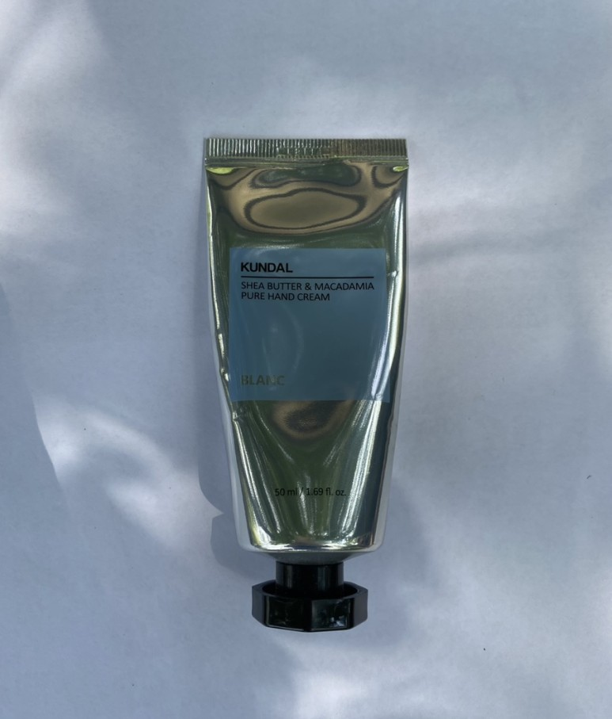
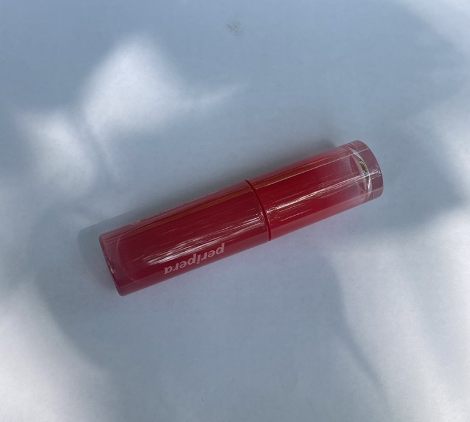
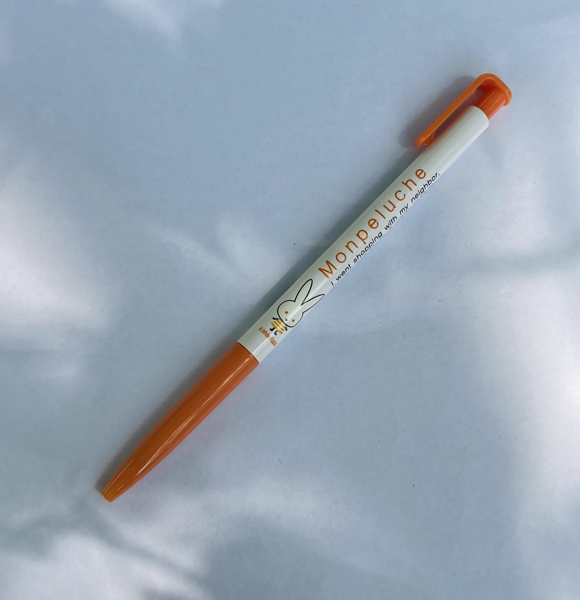

  
잡동사니들
핸드크림
손이 건조해서 가방마다 핸드크림을 하나씩 넣어둔다. 이 가방은 쿤달꺼네.. 향은 그냥 그래요. 그래서 잘 안바른다.
페리페라 틴트
이 틴트 세번이나 잃어버렸는데 매번 다시 되찾았다. 대박인 듯. 이름은 어쩔체리. 땅에 떨어져도 어쩔티비 마인드로 살아돌아오는.. 멋지다. 색도 예쁘다.
펜
펜 원래 안들고 다니는데, 한 학기에 한번씩은 펜 필요한 일이 생겨서 샀다.